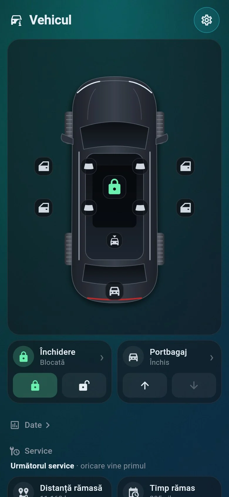
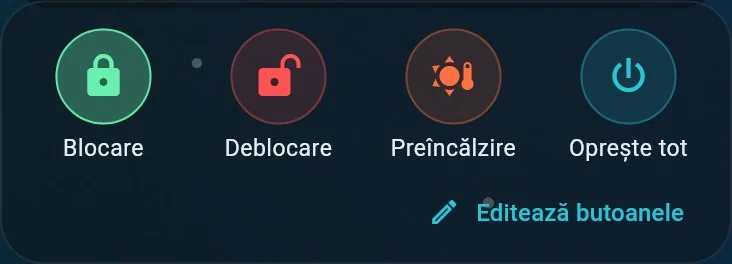
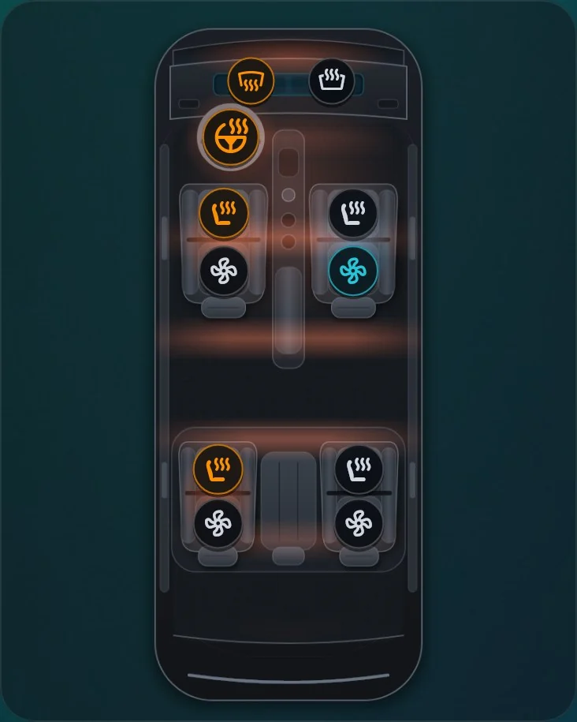
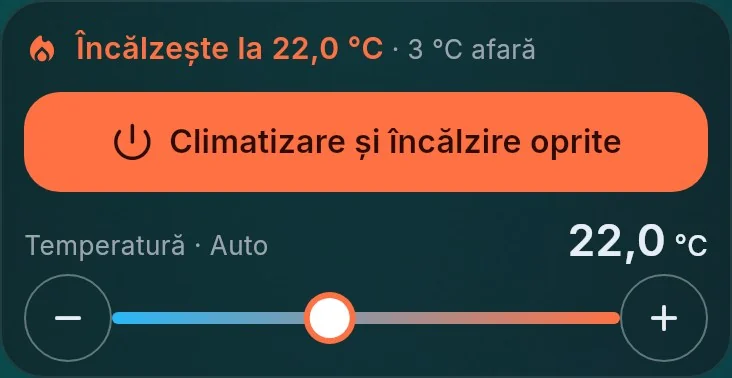

Toate funcțiile
Control de la distanță
Blocare, preîncălzire, răcire – de oriunde.
Trimite mașinii o comandă de pe canapea sau de la birou și vezi dacă a executat-o cu adevărat.



Comenzile tale preferate, la o atingere.
Pune pe ecranul principal butoanele pe care le folosești cel mai des – blocare, deblocare, preîncălzire, oprește tot și altele –, în ordinea care îți place.
- Doar ce poate mașina ta – Carmeo oferă comenzile pe care mașina ta le acceptă.
- Și din widgeturi – butoane în Centrul de control pe iPhone, plăci în Setări rapide pe Android.


Climatizare, scaun cu scaun.
Setezi temperatura din habitaclu, pornești încălzirea și ventilația pentru fiecare scaun, încălzirea volanului, dezaburirea și încălzirea parbrizului – pe o imagine de sus a habitaclului.

A mers? Carmeo verifică.
După o comandă, Carmeo se uită din nou la mașină. Dacă mașina nu a executat-o – pentru că doarme sau nu are semnal –, ești anunțat, nu lăsat să ghicești.
- Mai întâi confirmare – opțional, fiecare comandă de la distanță întreabă înainte de a fi trimisă.
- Face ID sau amprentă – opțional, înainte de deblocare, portbagaj, geamuri și trapă.
Încearc-o pe mașina ta.
Carmeo este gratuit. Intră în grupul de testare deschisă pe iPhone sau Android.